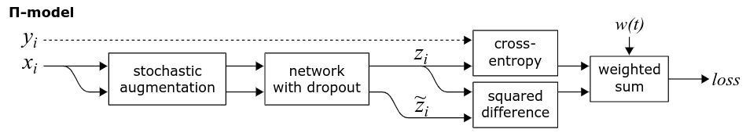
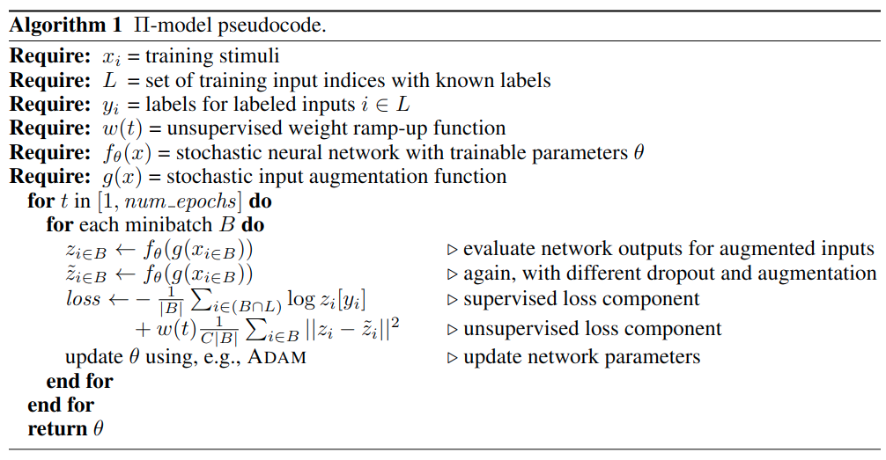
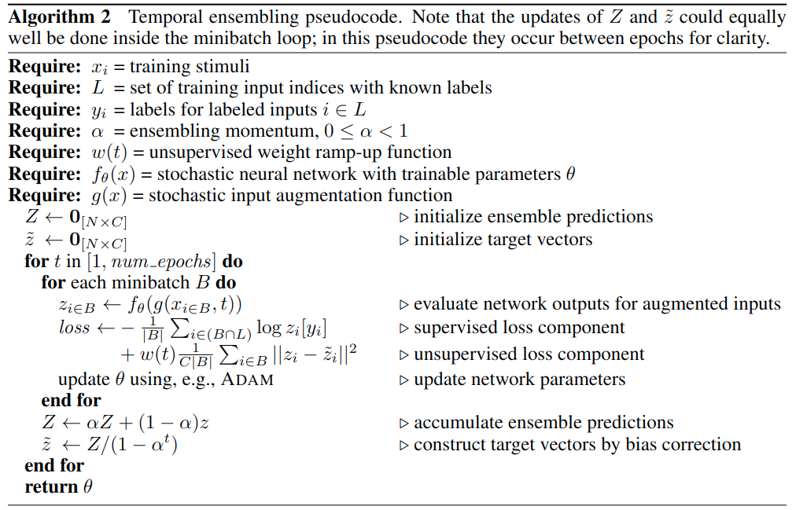

半监督学习：Π model
第二个算法Temporal Ensembling for Semi-Supervised Learning,它提出了一个Π model以及Temporal ensembling的方法。
算法理论
Π model
读作pi model但实际上代表着模型有着双输入，其示意图如下所示，对于无标签数据\(x_i\)经过两次不同的随机变换后再使用相同模型(模型的dropout也是不同的)的到两个输出\(z_i,\tilde{z}_i\)，由于样本是相同的，因此两次输出的概率分布间应该尽可能相同，计算两个输出概率的l2 loss并乘上warmup系数，因为在训练刚开始我们希望带标签样本的分类损失权重更大些。

Π model感觉非常简单，实际上是如pseudo label一样，考虑到了熵的正则化，但他的做法比pseudo label的更加高明一些，模型为何一定要知道无标签的样本的实际标签呢？直接利用两个同类样本间概率分布的相似度损失，提升模型的一致性；同时利用少量的带标签数据指导模型分类，over～

Temporal ensembling

Temporal ensembling时序组合模型，是针对Π model的优化，我们分析了Π model所做的两件事情，1)利用扰动样本学习一致性;2)利用有标签样本学习分类。在Π model中，\(z_i,\tilde{z}_i\)都是来自同一迭代时间内产生的两次结果，但实际上并没有必要，因为首先这样一个step就要推理两次模型，而且只在一个batch生成的概率分布偶然性较大，所以使用时序组合模型，\(\tilde{z}_i\)来自上个迭代周期产生的结果，\(z_i\)来自当前迭代时间内产生的结果，也就是比较了两次不同时间内产生的概率分布。在时序组合模型中，一个step只执行一次，那么相比于Π model，它就有了两倍的加速。同时这个\(\tilde{z}_i\)是历史\(z_i\)的加权和。这样做的好处是能够保留历史信息，消除扰动和稳定当前值。
这个做法就很像上一篇pseudo label最后，有的人发现一个epoch去打伪标签效果好于每个batch都打伪标签一样。

代码
这里只有Π model的代码，比较好理解。
hwc = [self.dataset.height, self.dataset.width, self.dataset.colors]
xt_in = tf.placeholder(tf.float32, [batch] + hwc, 'xt') # For training
x_in = tf.placeholder(tf.float32, [None] + hwc, 'x')
y_in = tf.placeholder(tf.float32, [batch, 2] + hwc, 'y')
l_in = tf.placeholder(tf.int32, [batch], 'labels')
l = tf.one_hot(l_in, self.nclass)
warmup = tf.clip_by_value(tf.to_float(self.step) / (warmup_pos * (FLAGS.train_kimg << 10)), 0, 1)
lrate = tf.clip_by_value(tf.to_float(self.step) / (FLAGS.train_kimg << 10), 0, 1)
lr *= tf.cos(lrate * (7 * np.pi) / (2 * 8))
tf.summary.scalar('monitors/lr', lr)
classifier = lambda x, **kw: self.classifier(x, **kw, **kwargs).logits
logits_x = classifier(xt_in, training=True)
post_ops = tf.get_collection(tf.GraphKeys.UPDATE_OPS) # Take only first call to update batch norm.
y = tf.reshape(tf.transpose(y_in, [1, 0, 2, 3, 4]), [-1] + hwc)
y_1, y_2 = tf.split(y, 2)
logits_y = classifier(y_1, training=True)
logits_teacher = tf.stop_gradient(logits_y) # 防止双倍梯度
logits_student = classifier(y_2, training=True)
loss_pm = tf.reduce_mean((tf.nn.softmax(logits_teacher) - tf.nn.softmax(logits_student)) ** 2, -1)
loss_pm = tf.reduce_mean(loss_pm) # 一致性损失
loss = tf.nn.softmax_cross_entropy_with_logits_v2(labels=l, logits=logits_x)
loss = tf.reduce_mean(loss)
tf.summary.scalar('losses/xe', loss)
tf.summary.scalar('losses/pm', loss_pm)
# L2 regularization
loss_wd = sum(tf.nn.l2_loss(v) for v in utils.model_vars('classify') if 'kernel' in v.name)
tf.summary.scalar('losses/wd', loss_wd)
ema = tf.train.ExponentialMovingAverage(decay=ema)
ema_op = ema.apply(utils.model_vars())
ema_getter = functools.partial(utils.getter_ema, ema)
post_ops.append(ema_op)
train_op = tf.train.MomentumOptimizer(lr, 0.9, use_nesterov=True).minimize(
loss + loss_pm * warmup * consistency_weight + wd * loss_wd, colocate_gradients_with_ops=True)
with tf.control_dependencies([train_op]):
train_op = tf.group(*post_ops)测试结果
使用默认参数以及cifar10中250张标注样本训练128个epoch，得到测试集准确率如下，和pseudo label差不多：
"last01": 48.75,
"last10": 47.32500076293945,
"last20": 47.64499855041504,
"last50": 47.904998779296875